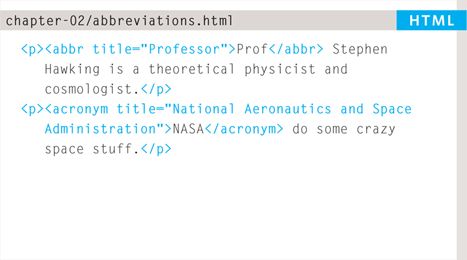

2
TEXT
- Headings and paragraphs
- Bold, italic, emphasis
- Structural and semantic markup
When creating a web page, you add tags (known as markup) to the contents of the page. These tags provide extra meaning and allow browsers to show users the appropriate structure for the page.
In this chapter we focus on how to add markup to the text that appears on your pages. You will learn about:
- Structural markup: the elements that you can use to describe both headings and paragraphs
- Semantic markup: which provides extra information; such as where emphasis is placed in a sentence, that something you have written is a quotation (and who said it), the meaning of acronyms, and so on
HEADINGS
<h2>
<h3>
<h4>
<h5>
<h6>

HTML has six “levels” of headings:
<h1> is used for main headings
<h2> is used for subheadings
If there are further sections under the subheadings then the <h3> element is used, and so on…
Browsers display the contents of headings at different sizes. The contents of an <h1> element is the largest, and the contents of an <h6> element is the smallest. The exact size at which each browser shows the headings can vary slightly. Users can also adjust the size of text in their browser. You will see how to control the size of text, its color, and the fonts used when we come to look at CSS.
PARAGRAPHS
<p>
To create a paragraph, surround the words that make up the paragraph with an opening <p> tag and closing </p> tag.
By default, a browser will show each paragraph on a new line with some space between it and any subsequent paragraphs.
BOLD & ITALIC
<b>
By enclosing words in the tags <b> and </b> we can make characters appear bold.
The <b> element also represents a section of text that would be presented in a visually different way (for example key words in a paragraph) although the use of the <b> element does not imply any additional meaning.
<i>
By enclosing words in the tags <i> and </i> we can make characters appear italic.
The <i> element also represents a section of text that would be said in a different way from surrounding content — such as technical terms, names of ships, foreign words, thoughts, or other terms that would usually be italicized.
SUPERSCRIPT & SUBSCRIPT
<sup>
The <sup> element is used to contain characters that should be superscript such as the suffixes of dates or mathematical concepts like raising a number to a power such as 22.
<sub>
The <sub> element is used to contain characters that should be subscript. It is commonly used with foot notes or chemical formulas such as H2o.
WHITE SPACE
In order to make code easier to read, web page authors often add extra spaces or start some elements on new lines.
When the browser comes across two or more spaces next to each other, it only displays one space. Similarly if it comes across a line break, it treats that as a single space too. This is known as white space collapsing.
You will often see that web page authors take advantage of white space collapsing to indent their code in order to make it easier to follow.
LINE BREAKS & HORIZONTAL RULES
<br />
As you have already seen, the browser will automatically show each new paragraph or heading on a new line. But if you wanted to add a line break inside the middle of a paragraph you can use the line break tag <br />.
<hr />
To create a break between themes — such as a change of topic in a book or a new scene in a play — you can add a horizontal rule between sections using the <hr /> tag.
There are a few elements that do not have any words between an opening and closing tag. They are known as empty elements and they are written differently.
An empty element usually has only one tag. Before the closing angled bracket of an empty element there will often be a space and a forward slash character. Some web page authors miss this out but it is a good habit to get into.
VISUAL EDITORS & THEIR CODE VIEWS
Content management systems and HTML editors such as Dreamweaver usually have two views of the page you are creating: a visual editor and a code view.
Visual editors often resemble word processors. Although each editor will differ slightly, there are some features that are common to most editors that allow you to control the presentation of text.
- Headings are created by highlighting text then using a drop-down box to select a heading.
- Bold and italic text are created by highlighting some text and pressing a b or i button.
- New paragraphs are created using the return or the enter key.
- Line breaks are created by pressing the shift key and the return key at the same time.
- Horizontal rules are created using button with a straight line on it.
If you copy and paste text from a program that allows you to format text (such as Word) into a visual editor, it may add extra markup. To prevent this copy the text into a plain text editor first (such as Notepad on a PC or TextEdit on a Mac) and then copy it from that program and paste it into the visual editor.
Code views show you the code created by the visual editor so you can manually edit it, or so you can just enter new code yourself. It is often activated using a button with an icon that says HTML or has angled brackets. White space may be added to the code by the editor to make the code easier to read.
SEMANTIC MARKUP
There are some text elements that are not intended to affect the structure of your web pages, but they do add extra information to the pages — they are known as semantic markup.
In the rest of the chapter you will meet some more elements that will help you when you are adding text to web pages. For example, you are going to meet the <em> element that allows you to indicate where emphasis should be placed on selected words and the <blockquote> element which indicates that a block of text is a quotation.
Browsers often display the contents of these elements in a different way. For example, the content of the <em> element is shown in italics, and a <blockquote> is usually indented. But you should not use them to change the way that your text looks; their purpose is to describe the content of your web pages more accurately.
The reason for using these elements is that other programs, such as screen readers or search engines, can use this extra information. For example, the voice of a screen reader may add emphasis to the words inside the <em> element, or a search engine might register that your page features a quote if you use the <blockquote> element.
STRONG & EMPHASIS
<strong>
The use of the <strong> element indicates that its content has strong importance. For example, the words contained in this element might be said with strong emphasis.


By default, browsers will show the contents of a <strong> element in bold.
<em>
The <em> element indicates emphasis that subtly changes the meaning of a sentence.
By default browsers will show the contents of an <em> element in italic.
QUOAATIONS
There are two elements commonly used for marking up quotations:


<blockquote>
The <blockquote> element is used for longer quotes that take up an entire paragraph. Note how the <p> element is still used inside the <blockquote> element.
Browsers tend to indent the contents of the <blockquote> element, however you should not use this element just to indent a piece of text — rather you should achieve this effect using CSS.
<q>
The <q> element is used for shorter quotes that sit within a paragraph. Browsers are supposed to put quotes around the <q> element, however Internet Explorer does not — therefore many people avoid using the <q> element.
Both elements may use the cite attribute to indicate where the quote is from. Its value should be a URL that will have more information about the source of the quotation.
ABBREVIATIONS & ACRONYMS
<abbr>
If you use an abbreviation or an acronym, then the <abbr> element can be used. A title attribute on the opening tag is used to specify the full term.


In HTML 4 there was a separate <acronym> element for acronyms. To spell out the full form of the acronym, the title attribute was used (as with the <abbr> element above). HTML5 just uses the <abbr> element for both abbreviations and acronyms.
CITATIONS & DEFINITIONS
<cite>
When you are referencing a piece of work such as a book, film or research paper, the <cite> element can be used to indicate where the citation is from.


In HTML5, <cite> should not really be used for a person's name — but it was allowed in HTML 4, so most people are likely to continue to use it.
Browsers will render the content of a <cite> element in italics.
<dfn>
The first time you explain some new terminology (perhaps an academic concept or some jargon) in a document, it is known as the defining instance of it.
The <dfn> element is used to indicate the defining instance of a new term.
Some browsers show the content of the <dfn> element in italics. Safari and Chrome do not change its appearance.
AUTHOR DETAILS
<address>
The <address> element has quite a specific use: to contain contact details for the author of the page.
It can contain a physical address, but it does not have to. For example, it may also contain a phone number or email address.

Browsers often display the content of the <address> element in italics.
You may also be interested in something called the hCard microformat for adding physical address information to your markup.
ONLINE EXTRA:
You can find out more about hCards on the website accompanying this book.
CHANGES TO CONTENT
<ins>
<del>
The <ins> element can be used to show content that has been inserted into a document, while the <del> element can show text that has been deleted from it.


The content of a <ins> element is usually underlined, while the content of a <del> element usually has a line through it.
<s>
The <s> element indicates something that is no longer accurate or relevant (but that should not be deleted).
Visually the content of an <s> element will usually be displayed with a line through the center.
Older versions of HTML had a <u> element for content that was underlined, but this is being phased out.

EXAMPLE TEXT
This is a very simple HTML page that demonstrates text markup.
Structural markup includes elements such as <h1>, <h2>, and <p>.
Semantic information is carried in elements such as <cite> and <em>.
<html>
<head>
<title>Text</title>
</head>
<body>
<h1>The Story in the Book</h1>
<h2>Chapter 1</h2>
<p>Molly had been staring out of her window for about
an hour now. On her desk, lying between the copies
of <i>Nature</i>, <i>New Scientist</i>, and all
the other scientific journals her work had
appeared in, was a well thumbed copy of <cite>On
The Road</cite>. It had been Molly's favorite book
since college, and the longer she spent in these
four walls the more she felt she needed to be
free.</p>
<p>She had spent the last ten years in this room,
sitting under a poster with an Oscar Wilde quote
proclaiming that <q>Work is the refuge of
people who have nothing better to do</q>. Although
many considered her pioneering work, unraveling
the secrets of the llama <abbr
title=“Deoxyribonucleic acid”>DNA</abbr>, to be an
outstanding achievement, Molly <em>did</em> think
she had something better to do.</p>
</body>
</html>